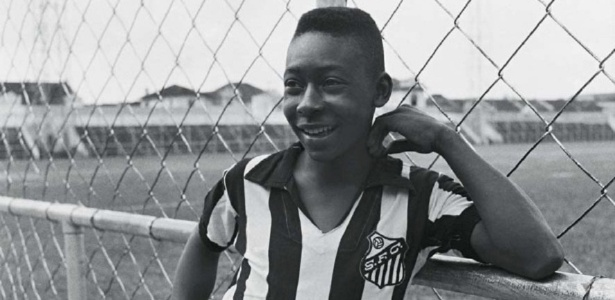
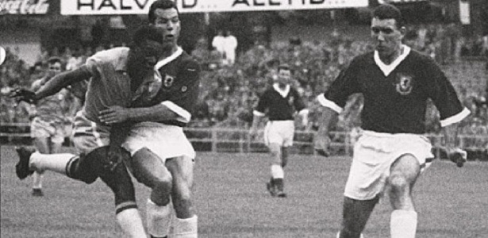
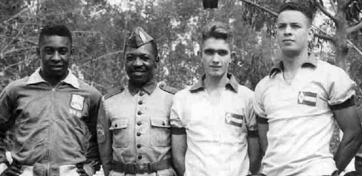
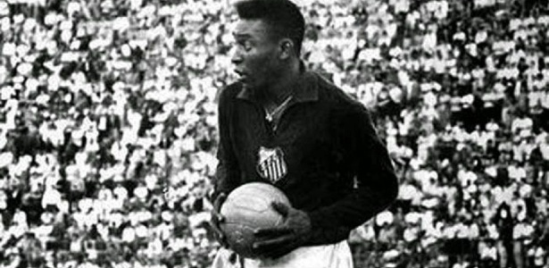
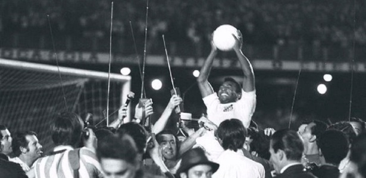
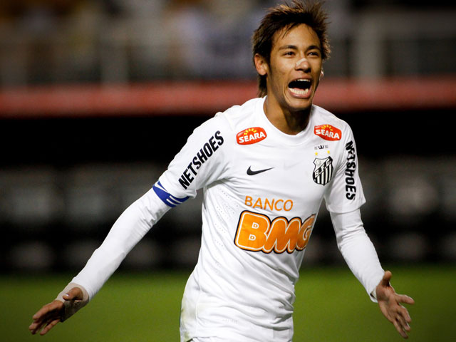

Antes de ser Pelé... Edson Arantes do Nascimento nem sempre foi chamado de Pelé. Recebeu o nome de Edson em homenagem ao inventor Thomas Edison. Seu primeiro apelido, dado pela família, era Dico. Só passou a ser chamado de Pelé na escola, pois pronunciava errado o nome de um dos seus ídolos no futebol, o goleiro Bilé, que jogava no Vasco da Gama
Um craque precoce Em 1958, com apenas 17 anos, Pelé foi artilheiro do Campeonato Paulista marcando 58 gols. No mesmo ano ele conquistou, junto com a seleção brasileira, a Copa do Mundo da Suécia, onde marcou cinco gols. É o campeão mais jovem da história das Copas do Mundo
Pausa na carreira Aos 18 anos, já reconhecido mundialmente, Pelé teve que dividir seu tempo entre o futebol e o serviço militar. Ele se alistou e serviu o Exército Brasileiro por seis meses no 6º Grupo de Artilharia de Costa Motorizado, em Praia Grande (SP)
Nem só de marcar gols foi feita a carreira de Pelé no futebol. Ele precisou jogar como goleiro do Santos em quatro partidas, devido a contusões ou expulsões dos titulares. A primeira vez foi em 1964 contra o Corinthians no Pacaembu em São Paulo. Depois ainda jogou como goleiro contra o Comercial (1969), Botafogo-PB (1969) e Baltimore-EUA (1973)
Rei dos cartões vermelhos? Ser um dos melhores jogadores de todos os tempos não impedia Pelé de colecionar cartões vermelhos. Ele foi expulso em treze partidas com a camisa do Santos. Um número considerado alto para um atleta de ataque
Gol 1.000 Existem muitas polêmicas a respeito dos mais de mil gols marcados por Pelé. No entanto, a famosa marca do milésimo gol aconteceu em 19 de novembro de 1969, em partida do Santos contra o Vasco, no Maracanã. Pelé fez, de pênalti, o tão famoso gol em cima do goleiro Andrada
O Santos buscava, desde 2005, uma goleada para “rivalizar” com o 7 a 1. Ela veio nove anos depois, na Vila Belmiro. Um passeio santista. Se o Santos não tivesse tirado o pé depois do quinto gol, a goleada poderia ter sido maior. O torcedor santista lamenta isso até hoje.
"Fazer parte da história do Santos também foi um orgulho para mim. Continua sendo, na verdade, porque era o time que eu queria jogar. Era o time que eu queria vencer. Era um sonho que eu tinha de estar ali. Então 48 anos depois, conquistar um título, um dos maiores títulos no futebol, que é a Libertadores, a felicidade foi gigantesca", disse.
Será que um dia o menino da vila retornará para casa?
